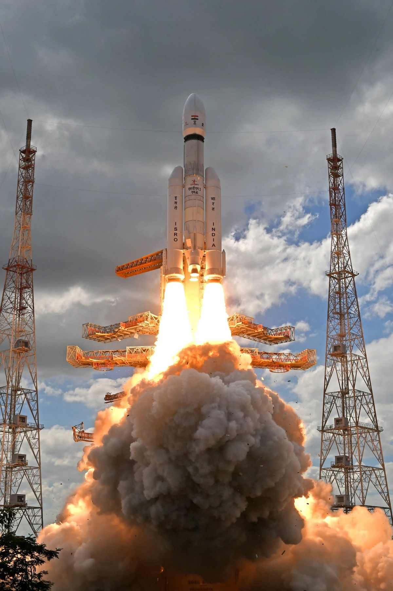
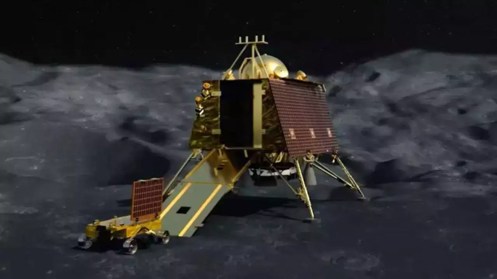

As the world renews its fascination with exploring the Moon, India achieves what no other nation has done before: successfully landing on the lunar south pole.

As the world renews its fascination with exploring the Moon, India achieves what no other nation has done before: successfully landing on the lunar south pole.

The craters grew larger as the spacecraft approached. Nothing seemed out of focus. As the world watched, the familiar image of the Moon appeared, bigger and brighter. This wasn’t the first time the moon was being captured from such close quarters. But this time, the excitement was different, the curiosity deeper, the hope stronger.
Four years after Chandrayaan – 2, which stumbled in its final landing, the Indian Space Research Organisation (ISRO) launched Chandrayaan – 3 on 14 July 2023. After a successful landing on 23 August, India became only the fourth nation to land a spacecraft on the Moon and the first at its South Pole.
Chandrayaan – 3 (Chandra means moon and yaan means vehicle in Hindi) was launched from Sriharikota in the
southern Indian state of Andhra Pradesh. The hunt for a perfect location for India’s future launches was
spearheaded by Vikram Sarabhai, the founder of the Indian space programme, with Sriharikota identified as a
satellite launching station in 1969.
The location was selected for its proximity to the equator as the Earth’s rotation imparts extra velocity on
rockets launching from this latitude.
Chandrayaan-3’s lander, named Vikram after ISRO’s founder, weighs about 1,500 kilograms and contains a
rover named Pragyaan, Sanskrit for wisdom.
Once on the lunar surface, the six-wheeled rover will detach from the lander and roam the southern polar region, an area still largely unexplored. Scientists think water may be present in the craters which are in perpetual shadow. The rover will gather crucial images and data using five scientific instruments that will investigate the surface of the Moon, tectonic activity beneath it and the very thin atmosphere above.
The UK’s own Goonhilly Earth Station in Cornwall will play a key role in receiving signals from Chandrayaan’s Vikram lander. The huge Antenna One at Goonhilly was originally built to link with the Telstar satellite, which in 1962 relayed the first live transatlantic TV broadcast. Many more antennas were built over the years making Goonhilly the largest satellite Earth station in the world. After a period of decline, Goonhilly is now becoming a significant site for communication with many interplanetary and lunar space missions underway.
Chandrayaan-1, which launched in 2008, was India’s first lunar mission. The spacecraft orbited the Moon and fired an impactor into the surface. The mission discovered the presence of water molecules on the Moon, but after almost a year’s struggle with technical issues and the loss of contact with the spacecraft, ISRO declared the mission over. The Chandrayaan-2 mission comprised an orbiter, lander and a rover. Launched in July 2019 it was only partially successful. While the lander-rover crashed during touchdown, the orbiter continues to study the Moon today. Chandrayaan-3 has launched during a global resurgence in lunar exploration. NASA’s first commercial space mission, Peregrine Mission 1, which will be the first American and student-developed rover on the Moon if successful, is planned to launch later in 2023. NASA’s Artemis 2, a crewed flight around the moon, will launch in 2024. If successful, this mission will take humans further than ever before into space. Space X also has plans to take nine passengers around the Moon on its ‘dearMoon voyage’ in late 2023. When Chandrayaan-3 released its first videos of the approaching lunar surface on 5 August, the Moon pirouetted gently, almost as if posing for a photograph, stunning in its craters and mountains. On 23 August, the world watched as Chandrayaan-3 hovered above the lunar surface, at the end of the most arduous of journeys. At 6:04 pm Indian Standard Time, the ISRO centre in Bengaluru broke out into shrieks of happiness, and people huddled around television screens across the globe applauding with them. Chandrayaan-3 descended on the far side of the Moon and landed at its south pole – the first spacecraft ever to do so – but as importantly, reminded the world about our nearest and dearest neighbour in space.